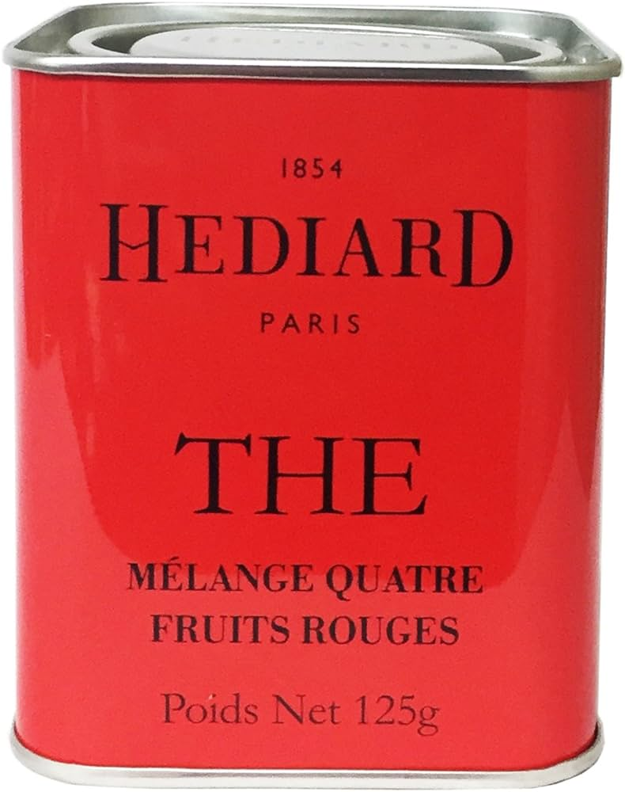
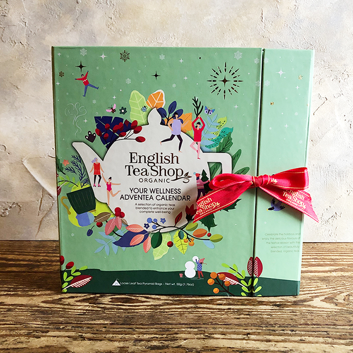
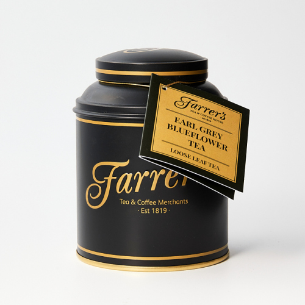
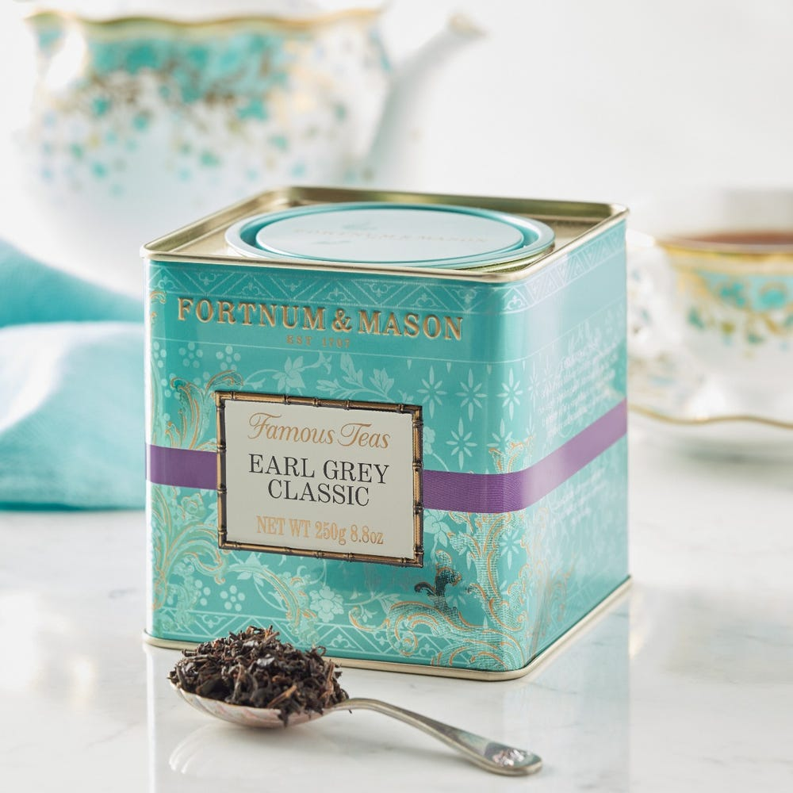
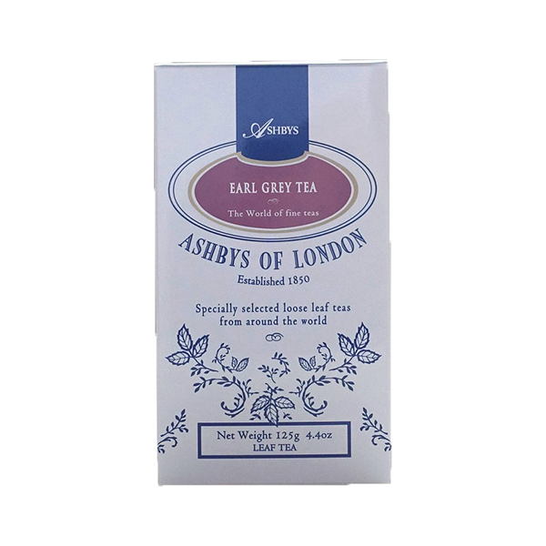

Tea and me


l
o
a
d
i
n
g
.
.
.
私と紅茶
母が元々好きだったこともあり、紅茶は小さな頃から身近にあった。
当時はまだ「お休みの日に飲む物」といった認識しかなかったが、
家族と飲む紅茶は幼い頃の私にとって確かに至福のひと時だった。
そんな私と紅茶の思い出と、特に好きなアールグレイを紹介する。

HEDIARD セイロン オレンジペコ
小さい頃によく飲んでいた紅茶。
ずっとオレンジ味だと思ってたけど、
実際は茶葉の大きさを表す等級の一つ。
ストレートもレモンもミルクもなんでも合う茶葉
赤い缶が特徴的で可愛い。

マリアージュフレール マルコポーロ
紅茶といえばマリーアジュフレール、マリアージュフレールといえばマルコポーロ。私がマリアージュフレールに初めて行った時に頼んだのもマルコポーロ。華やかな花の香りとベリーの甘酸っぱさがいつでも心を落ち着かせてくれる。

English Tea shop アドベントカレンダー
12月25日までの間、1日1杯の紅茶が楽しめるカレンダー。普段飲まないようなフレーバーを引き当てて、母親とそれぞれマグカップに淹れて駄弁る時が好きだった
アールグレイはどれも同じ？




ファーラーズ
香り
★★★★☆
味
★★☆☆☆
搾りたてのレモンを入れたのかと思ってしまうほど柑橘の爽やかな香りがする。ゴクゴク飲めちゃう
フォートナム&メイソン
香り
★★★☆☆
味
★★★★★
私が紅茶にハマったキッカケ。香りも華やかで一番飲んだ時の多幸感がすごい。優雅
エディンバラ ティー＆コーヒーカンパニー
香り
★★★★☆
味
★★★★☆
鼻に抜ける香りと、飲んだ後に広がる味が非常に華やか。ゆっくり飲んで楽しみたいタイプ
アシュビィズ オブ ロンドン
香り
★★★★☆
味
★★★☆☆
Theアールグレイではないが不思議と薔薇のようなフローラルな香りが楽しめる（花は入っていない）